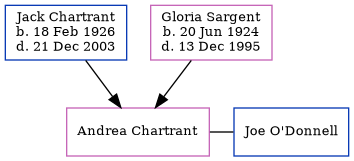

Vanessa Chartrant
[ Home ] | [ Calendar ] | [ Surnames Index ] | [ Census Index ] | [ Family History ]The child of Jack Chartrant and Gloria Sargent, Vanessa Chartrant was the sixth cousin on the mother's side of Nigel Horne.
Parents
- Jack Edward was born on Feb 18, 1926
- Gloria B was born on Jun 20, 1924
Family Tree
Generated by ged2site. Last updated on Jun 11, 2024